CSAPP Data Lab 学习记录
开始之前
下载代码文件
CSAPP的project可以从官方网站上下载。其中project代码文件在Self-Study Handout链接那里。使用如下命令下载datalab文件，并解压进入目录：
1 | wget https://csapp.cs.cmu.edu/3e/datalab-handout.tar --no-check-certificate |
进入这个目录后，可以看到一个名为 bits.c 的文件。这个文件是要去完成的project，所有的题目都在这个文件中。
检查答案正确性并评分
当修改好 bits.c 文件后，可以用以下方式检验答案正确性：
-
检查 bits.c 的代码风格
在命令行中使用./dlc bits.c或者./dlc -e bits.c检查。- 对于
./dlc bits.c命令，如果 bits.c 没有问题，将什么也不会输出。 - 对于
./dlc -e bits.c命令，程序将会打印每个函数所用的操作符号数，当然，不算括号、等号。
- 对于
-
编译
1
2
3make clean
make btest
# 或者直接一步到位，使用 make clean && make btest注意：修改 bits.c 文件后，需要重复以上步骤重新编译。
当然，不用
make btest而是用make命令也是可以的，只不过会比make btest多生成 fshow 和 ishow 两个文件。这两个文件是帮助文件，可以帮忙写出某个数的其它表示。比如./ishow 0x27将会输出Hex = 0x00000027, Signed = 39, Unsigned = 39。具体用法可见 datalab-handout 文件夹下 README 文件中的例子。 -
检查 bits.c 中函数的正确性
- 使用
./btest检查所有函数的正确性并给出总得分（注意：btest检查不出代码风格上的错误） - 使用
./btest -f <function-name>检查某一函数的正确性，如./btest -f bitXor检查 bitXor 函数的正确性 - 关于 btest 的其他用法，可以在命令行中输入
./btest -h查看。
- 使用
-
评分
当完成 bits.c 中全部题目时，可在命令行中输入./driver.pl评分，会输出一个最终分数。
题目的个人解答
bitXor
题目要求：只使用 ~ 和 & 实现异或。不使用超过14个运算符。
思路：由
可得以下代码
1 | int bitXor(int x, int y) { |
或者由
可得以下代码
1 | int bitXor(int x, int y) { |
注：以上为异或符号，为同或符号。
tmin
题目要求：返回最小的补码，即 0x80000000 。只允许使用 ! ~ & ^ | + << >> 来实现。使用的运算符个数不超过4。
思路：使用移位运算符即可。
1 | int tmin(void) { |
isTmax
题目要求：如果 x 是最大的补码数 (即 0x7fffffff )，则返回1，否则返回0。只允许使用 ! ~ & ^ | + 来实现。使用的运算符个数不超过10。
思路：真的有种想套用第2题的解法的想法，先用移位运算符 << 得到 tmin，再取反得到 tmax。可惜题目不给用 << 。
这里用的方法是 0x7fffffff 自身的特点：0x7fffffff 反码为 0x80000000 ，两者恰好相差1，所以只需要判断 x+1 与 ~x 相等就行了。而两个数相等又可以用异或来判断。于是得到以下代码：
1 | int isTmax(int x) { |
提交，怎么没过？看一下错误提示，发现一条信息：
1 | ERROR: Test isTmax(-1[0xffffffff]) failed... |
原来，-1的反码为0，-1加1也等于0，所以需要把-1排除掉（比如检测 ~x 是否为0）。修正后的代码如下：
1 | int isTmax(int x) { |
这一次就成功通过了。
还有可能存在其它满足~x=x+1的数字吗？
我们知道，~x 满足 x+(~x)=-1。
如果 x+1 溢出了，x 只有可能为0xffffffff，即-1，刚才已经考虑过了。
如果 x+1 没有溢出，那么 ，即。考虑到 x 的范围为，因此 x 只有可能为 或(x+1 溢出，不算)
由此可见，确实不存在其它满足~x=x+1的数字了。
allOddBits
题目要求：如果 x 的所有奇数位为1 (即1x1x1x1x…的形式，其中x表示0或1)，则返回1，否则返回0。只允许使用 ! ~ & ^ | + << >> 来实现。使用的运算符个数不超过12。
思路：这是一道检测位的题目，可用“或”来实现。如果 x 符合题目要求，那么 x|0x55555555=0xffffffff，只需要构造出0x55555555即可。由于题目只允许使用0~255间的整数，因此可以用移位运算符来构造：0x55+(0x55<<8)=0x5555，0x5555+(0x5555<<16)=0x55555555。
1 | int allOddBits(int x) { |
negate
题目要求：返回-x。只允许使用 ! ~ & ^ | + << >> 来实现。使用的运算符个数不超过5。
思路：-x=~x+1
1 | int negate(int x) { |
isAsciiDigit
题目要求：如果 x 的ASCII码满足 0x30 <= x <= 0x39，返回1。只允许使用 ! ~ & ^ | + << >> 来实现。使用的运算符个数不超过15。
思路：当0x30 <= x <= 0x39时，x-30>=0 , 39-x>=0，即 x-30 , 39-x 的符号位均为0。
1 | int isAsciiDigit(int x) { |
conditional
题目要求：返回x ? y : z。只允许使用 ! ~ & ^ | + << >> 来实现。使用的运算符个数不超过16。
思路：依题意当 x 不为0时返回 y ，当 x 为0时返回 z 。假设返回 y，只需返回 (y&0xffffffff)+(z&0x0)；假设返回 z，则返回 (y&0x0)+(z&0xffffffff)，所以想办法让 x 为0和1时对应0xffffffff和0x0即可。
1 | int conditional(int x, int y, int z) { |
isLessOrEqual
题目要求：如果 x<=y，返回1，否则返回0。只允许使用 ! ~ & ^ | + << >> 来实现。使用的运算符个数不超过24。
思路：一种直接的想法是先计算 y-x，再检查符号位。y-x 的计算可以用反码算得。如果符号位是1就说明 x>y。但是这种方法有一个问题：万一 y 是一个很大的正数，而 x 是一个很小的负数，明明 y-x 应该为正数，但在实际情况中却因为溢出而变成了负数！所以应该分两种情况讨论：
- x 与 y 的符号位不同：返回 x 的符号位
- x 与 y 的符号位相同：返回 y-x 的符号位取反后的值
1 | int isLessOrEqual(int x, int y) { |
logicalNeg
题目要求：使用 ~ & ^ | + << >> 运算符实现 ! 。使用的运算符个数不超过12。
思路：这个问题要将0变成1，而非零的数变成0。这就要求要找到一个办法将0和非零的数区分开。注意到0是唯一一个满足 x==-x 的数，也就是说，经过~x+1这一运算，0的符号位仍旧不变，而其它的符号位变了。可以利用这点来实现 !。由此可以得到以下代码：
1 | int logicalNeg(int x) { |
如果直接这样提交的话，会发现答案是错的。错在哪呢？原来，在利用 x=-x 时，我们忽略了一个重要例外：当 x=0x80000000 时，~x 也等于 0x80000000，此时 ~x+1 等于 0x80000001，这个时候 x 的符号位也不变。注意到这个时候 x 和 -x 的符号位都为1，因此只需将 int nZero=beginSign^endSign; 改为 int nZero=beginSign|endSign; 即可。修正后的代码如下：
1 | int logicalNeg(int x) { |
现在就可以顺利通过了。
howManyBits
题目要求：返回表示有符号数 x 所需的最小的位数。只允许使用 ! ~ & ^ | + << >> 来实现。使用的运算符个数不超过90。
思路：首先要明白题目的意思。1位数可以表示-1,0，2位数可以表示-2,-1,0,1，3位数可以表示-4~3……也就是说，n位数可以表示 到 之间的数。
为了像正数一样处理负数，可先将负数转化为它的补码（易知表示 x 和表示 ~x 所需要的位数是一样的）。
在这个问题中，可以采用一种二分的思想来计算位数。
对于一个32位的数，先判断前16位是否全为0。如果不是，知道至少需要用16位表示，并进一步分析前16位；否则进一步分析后16位。
对于一个16位的数，先判断前8位是否全为0。如果不是，表示所需的位数+8，并进一步分析前8位；否则进一步分析后8位。
以此类推，最终可以确定表示所需的位数。
1 | int howManyBits(int x) { |
floatScale2
题目要求：将浮点数乘2。允许使用整型、无符号型的运算符，以及 && || if while 。运算符个数不超过30。
思路：开始之前，还是有必要回顾一下单精度浮点数的表示。

一般情况下 ( 且 )，这个浮点数表示的数字为，但是有几个例外：
- 当 E=0 时，为非规格化的浮点数。特别地，当 S, E, F 都为0时表示浮点数0.0
- 当 E=0xff 且 F=0 时表示无穷大
- 当 E=0xff 且 F 不为0时表示 NaN
因此，一般情况下，若浮点数不溢出，将指数部分加1即可；若溢出，还需要额外将尾数部分置为0。非规格化的数保留 S 不变并将剩余部分乘以2。几个特殊的数值保留原样返回即可。
1 | unsigned floatScale2(unsigned uf) { |
floatFloat2Int
题目要求：将单精度浮点数转化为整型数，若浮点数为inf或NaN或者超出整型范围的则返回0x80000000u。允许使用整型、无符号型的运算符，以及 && || if while 。运算符个数不超过30。
思路：根据浮点数可得到符号位、指数部分。原来的浮点数将前8位置为0，第9位置为1可得到该浮点数的绝对值的整型表示。
然后根据指数部分移位。
- 若 E>127+23 ，应左移 E-150 位。特别地，当 E>=127+31，即 E>=158时将会溢出，此时应返回0x80000000u。
- 若 E<127+23 ，应右移 E-150 位。特别地，当 E<127 时，说明这个浮点数的绝对值小于1，应抛弃小数部分直接返回0。
最后再还原符号位。若为0或负数，直接取负即可。
1 | int floatFloat2Int(unsigned uf) { |
floatPower2
题目要求：返回2.0^x。允许使用整型、无符号型的运算符，以及 && || if while 。运算符个数不超过30。
思路：根据题意只需要设置指数部分。当 E 的范围为 0 < E < 255，也即 -127 < x < 128 时返回 E<<23 。当 E<=0 和 E>=255 时特殊处理。
1 | unsigned floatPower2(int x) { |
完结撒花
1 | Correctness Results Perf Results |